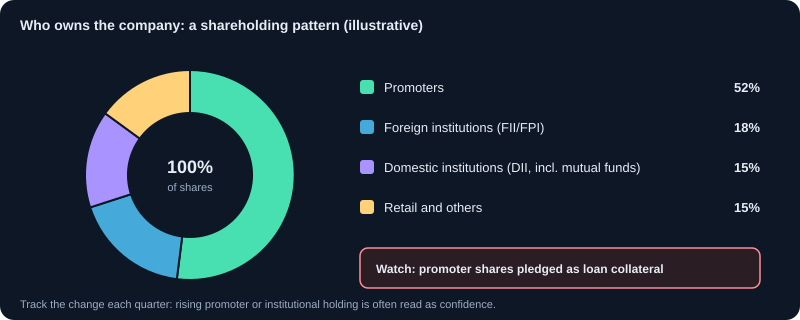
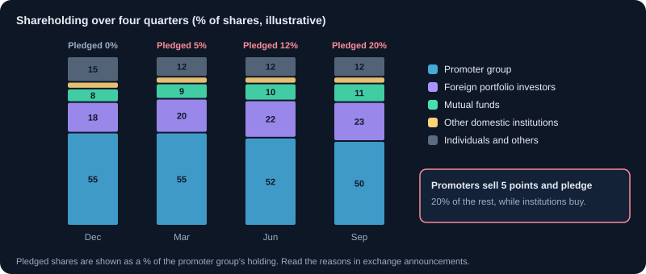

Shareholding Pattern and Promoter Holding
Who owns a company, how promoter, institutional and public holdings change, and what pledged shares mean.
1. What the shareholding pattern shows
The shareholding pattern is filed by listed companies every quarter. It shows what percentage of shares is held by promoters (the founders and controlling group), public institutions (mutual funds, insurance, foreign and domestic institutions), and the public (retail investors).
2. The main categories
- Promoter and promoter group: the controlling owners. High promoter holding often signals commitment, but can also mean limited free float.
- Foreign institutional investors (FII) and domestic institutional investors (DII): mutual funds, insurers and others. Their buying and selling is watched closely.
- Public: retail investors and others holding small amounts.
- Non-promoter, non-public: shares held by certain trusts and employee benefit schemes.
3. What changes mean
A rise in institutional holding over several quarters can show growing professional confidence. A fall in promoter holding can signal selling, or dilution from a new share issue. Read the change together with the reason given. A single quarter's change matters less than a trend over four to six quarters.
4. Pledged shares: a risk signal
Promoters may pledge their shares to borrow money. The shareholding pattern shows the pledged share of promoter holding. High pledges are risky: if the share price falls, lenders can sell the pledged shares, which can push the price down further. Watch pledges that rise quickly.
5. Free float and liquidity
Free float is the part of shares not held by promoters or locked in. A small free float can mean thin trading, wider spreads and more volatile prices. Check the free float before trading a stock in size.
6. Using the pattern with other data
Combine ownership changes with results, cash flow and price trend. Rising institutional buying alongside improving margins is a stronger signal than either alone. Rising pledges with falling profits is a warning.
7. A reading checklist
- Promoter holding and its change over four to six quarters.
- Promoter pledge percentage and whether it is rising.
- FII and DII holding trend.
- Free float size.
- Changes that line up with results, or that are unexplained.
8. When it is filed and how it is organised
Listed companies file their shareholding pattern with the exchanges every quarter, within 21 days of the quarter's end, under SEBI's listing rules. Find it on the NSE or BSE company page under 'Shareholding pattern'. The format is standard:
- Promoter and promoter group, Indian and foreign, with shares pledged or otherwise encumbered.
- Public, institutions: mutual funds, foreign portfolio investors (FPIs), insurance companies, banks and other financial institutions.
- Public, non-institutions: individuals (split by holding size), companies (bodies corporate), NRIs, trusts and others.
- Shares held by custodians against depository receipts, if any.
- The full list of holders above 1% in each category.
9. Minimum public shareholding and free float
Listed companies must keep at least 25% of their shares with the public (minimum public shareholding), so promoters can hold at most 75%. Newly listed and government-owned companies get extra time to comply. Promoters above the limit must sell, often through an offer for sale or a placement, which can weigh on the price. Index providers use free-float market capitalisation (excluding promoter holding), so a higher free float gives a stock more weight in indices such as the NIFTY 50.
10. Reading a four-quarter trend
One quarter tells you little. Lay four or more quarters side by side, % of total shares:
| Holder | Dec | Mar | Jun | Sep |
|---|---|---|---|---|
| Promoter and promoter group | 55.0 | 55.0 | 52.0 | 50.0 |
| Promoter shares pledged (% of promoter holding) | 0 | 5 | 12 | 20 |
| Foreign portfolio investors | 18.0 | 20.0 | 22.0 | 23.0 |
| Mutual funds | 8.0 | 9.0 | 10.0 | 11.0 |
| Other domestic institutions | 4.0 | 4.0 | 4.0 | 4.0 |
| Individuals and others | 15.0 | 12.0 | 12.0 | 12.0 |
The picture is mixed: institutions keep buying, but promoters have sold 5 points of the company and pledged a fifth of what they still own. Before trusting the institutional buying, find out why promoters are selling and borrowing against their shares: read exchange announcements, the annual report and any credit rating notes.
11. Insider trades, bulk deals and block deals
- Insider trading disclosures: promoters, directors and key employees must report their trades to the company, which informs the exchanges, once trades in a quarter cross ₹10 lakh. These appear within days, long before the next quarterly pattern.
- Pledge disclosures: promoters must disclose the creation or release of pledges and other encumbrances within a few working days.
- Bulk deals: a single client's trades in a day totalling more than 0.5% of a company's shares, published daily by the exchanges.
- Block deals: large trades done in a separate trading window, also published daily.
- Promoter buying with their own money in the open market is usually a stronger signal than any statement.
12. Patterns and what they can mean
- Promoter stake rising through open-market purchases: confidence, or a defence against a takeover.
- Promoter stake falling through an offer for sale: may be to meet the 25% public rule or to repay promoter debt. Read the reason.
- Pledge rising quarter after quarter: the promoter is borrowing against shares; a fall in price can trigger forced selling.
- FPIs and mutual funds leaving while retail holding rises: professionals may see risks that individuals do not.
- Mutual funds steadily adding over several quarters: research-backed interest, but not a guarantee.
- Sudden jumps in holding by unknown entities: check announcements and avoid stocks with unexplained concentration.
Charts and visuals


Worked examples
Pledge as % of promoter holding
Promoters hold 50% of 20 crore shares, that is 10 crore shares, and have pledged 2 crore of them. The pledge is 20% of promoter holding and 10% of the whole company. Exchanges and data sites show both numbers; know which one you are reading.
Free float in rupees
A company with a market capitalisation of ₹10,000 crore has 70% promoter holding. Its free-float market capitalisation is ₹3,000 crore, which is what index weights and much institutional interest depend on.
Real-life scenarios
The slow pledge build-up
Over six quarters, promoter pledge rises from 0% to 45% of promoter holding while the stock falls 30%. Lenders issue margin calls, the promoter cannot add collateral, and pledged shares are sold in the market, pushing the price down another 25% in a week.
Selling to meet the public float rule
A recently listed company's promoter holds 82%. To reach the 75% limit, the promoter sells 7% through an offer for sale at a discount. The stock dips during the sale, but the business is unchanged and liquidity improves afterwards.
Use cases
- Checking promoter pledge before buying any stock, especially small and mid-sized companies.
- Tracking whether mutual funds and FPIs are adding or reducing over several quarters.
- Following insider-trade and bulk-deal disclosures between quarterly filings.
- Understanding why a stock may face supply from a promoter sale or minimum public shareholding compliance.
Key takeaways
- Read at least four quarters; direction matters more than one number.
- Rising promoter pledge is a risk signal, whatever the reason.
- Promoters can hold at most 75%; selling to meet this rule is not a judgement on the business.
- Insider-trade, pledge and bulk-deal disclosures update much faster than the quarterly pattern.
- Combine ownership changes with results and the annual report before acting.
Questions learners ask
Is high promoter holding always good?
It shows the owners have a lot at stake, which aligns them with shareholders. But very high holding means low free float and less liquidity, and it matters more whether promoters are pledging or selling than how much they own.
Where can I see the latest promoter trades?
In the insider trading (SEBI PIT) and SAST disclosures on the NSE and BSE announcement pages. They appear within days of the trade.
Why would a promoter pledge shares?
To raise loans, for the company or for other businesses or personal needs. A small, stable pledge is common; a rising pledge, especially when the price is falling, raises the risk of forced selling.
Do mutual funds buying a stock mean I should buy it too?
No. Funds have different horizons, sizes and reasons, and they can be wrong. Treat it as one input and check the business yourself.
Educational content only, not investment advice. Markets carry risk, including loss of capital. Examples are simplified and may exclude charges, taxes and slippage.